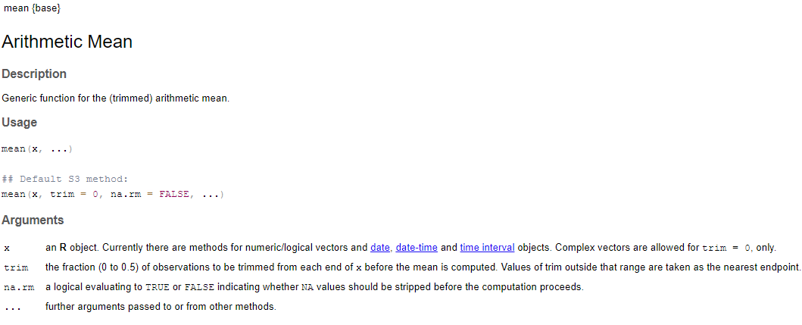
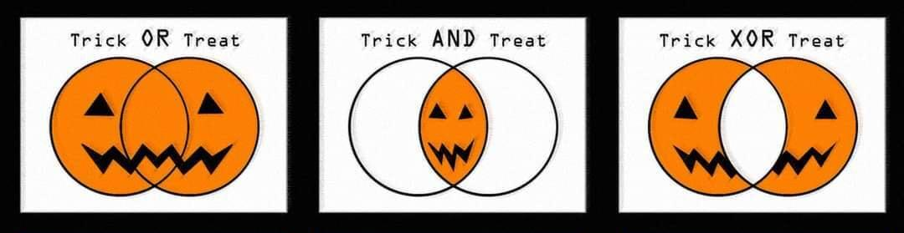

7 + 3 * 5
#> [1] 22Programming Basics
Functions, Accession, Vectors
Catch Up
Any questions on basics of visualization from last time?
For review, see chapter 2 from R4DS
For recipes, you can check the first, second, and eighth recipes under Visualize Data on Posit Cloud
Any questions on the reading / primer?
- You’ve gotten some experience running R code with visualization but now we need to dive into the fundamentals
Agenda
Functions
Accessing Data
Vectors
Full disclosure:
These topics are extremely important
They will also seem boringly useless…
Review - Coding Basics
- We already know R can serve as a calculator
- We also know we can take data and assign it to the R essentials using the assignment operator
<-
xx <- 7 + 3 * 5
xx
#> [1] 22 - Finally, we write comments using
#to tell others about our code
#I assigned a value to xx
xx <- 7 + 3 * 5Review - The R Essentials Short List
We’re already touched on the “nouns” and “verbs” as the R Essentials
. . .
The nouns are objects which store some sort of data or information
These are the vectors, data frames, and lists
But most R processes make objects e.g. your plots from last time were also objects
. . .
- The verbs are functions which do work on objects using arguments
function_name(argument1 = value1, argument2 = value2, ...)- Let’s dive a bit deeper into functions
Functions
Functions - A Basic Example
Broadly, a function starts with inputs, applies a process, and finally returns one or more outputs
Functions are everywhere and not just in programming, for example…
inputs: eggs, chocolate chips, flour, sugar, butter
process: preheat oven, mix ingredients, bake, let cool
outputs: delicious chocolate chip cookies
It’s worth mentioning an algorithm is the high-level “recipe” (a procedural series of steps) while the function is the actual implementation, whether in code or otherwise
Functions - Functions in R
In R, the function output is usually assigned to a new variable
cookie_batch <- make_cookies(batch_size = 12)- Working with our R Essentials list:
make_cookies()is the functionbatch_sizeis the (only listed) argument12is the value we provide for thebatch_sizeargumentcookie_batchis the object which we assign the outputfrom
make_cookies()to
Functions - Functions in R
In R, the function output is usually assigned to a new variable
cookie_batch <- make_cookies(batch_size = 12)- A command like this creates a new object in the global environment that can now be accessed using subsequent commands
full_chad <- shove_food_in_face(to = chad, what = cookie_batch)- Rather than create
full_chadwe can also modify the originalchad
chad <- shove_food_in_face(to = chad, what = cookie_batch)- Note, both the
toargument and output ofshove_food_in_face()operate onchad
Functions - Working with Arguments
Arguments are the parameters we pass to a function and all arguments must be specified
However, many arguments have default values
These values are used when a value is not specified
However, they can be changed if desired when calling the function
Arguments without default values MUST be specified
Finally, all argument values that are specified must* exist in the global environment when the function is called
Functions - Winning the Argument
- Let’s look at the help page for
mean()and check the default method

- We see
xdoes not have defaults buttrimandna.rmdo
Functions - Winning the argument
- So
xmust be specified and must exist otherwise we get an errors
#Specify a vector
xx <- c(1,2,3,4,5)
#Get the mean
mean(xx)[1] 3#But if we don't specify a value for x we get an error
mean()Error in mean.default(): argument "x" is missing, with no default#Furthermore, it must exist
mean(yy)Error in eval(expr, envir, enclos): object 'yy' not foundFunctions - Winning the argument
- You don’t have to specify defaults but you can modify them
#Specify a vector with an NA
xx <- c(1,2,3,4,5,NA)
#By default, na.rm is set to false so NA is returned
mean(xx)[1] NA#But we can modify na.rm to TRUE to drop NA's from x
mean(xx, na.rm = TRUE)[1] 3- When reading the help menu for a function, be sure to check the arguments to see what they do and which ones have defaults you may (or may not) want to modify
Functions - Back to the Environment
- We previously discussed environments as the container where things created in R are “stored”
The current local session / workspace is the global environment where objects we create are stored by default
But we also talked about “scoping” which dictates how we access the R essentials we make
RStudio’s Environment Pane 
Functions - Scoping and Local Environments
- Our workspace is the
global environmentso when we make an assignment this is where things usually get accessed
x <- 1:5- But dataframes and lists also create their own internal environments
df <- tibble(x = c('a','b','c','d','e'))- Importantly, we now have two
x’s
The vector of numbers in our global environment
The variable/column of letters which exists inside the
dftibble
Functions - Scoping and Local Environments
- Getting to the vector
xis easy, it exists in the global environment
x[1] 1 2 3 4 5But what about the variable inside of
df?It exists within
dfbut the tibble is what’s inside the global environment
df# A tibble: 5 × 1
x
<chr>
1 a
2 b
3 c
4 d
5 e So how do we access the x in df?

Accessing Data
Accessing Data - Tibbles and Data Frames
Let’s build on df and call it dummy_data
dummy_data <- tibble(char_var = c("A", "B", "C", "D", "E"),
num_var = c(1, 2, 3, 4, 5))
dummy_data# A tibble: 5 × 2
char_var num_var
<chr> <dbl>
1 A 1
2 B 2
3 C 3
4 D 4
5 E 5- So
dummy_dataexists in the global environment whilechar_varandnum_varexist indummy_data’s local environment
Accessing Data - Accessing by Position
As mentioned previously, all data frames and tibbles are rectangular using rows and columns with well defined positions
In R, we can access data with elements in well defined positions by using bracket notation
[]; this is indexingIn the case of rectangular data sets, a value by the ith row and jth column position using square brackets
dummy_data[i,j]
#Getting the value at the 2nd row and 1st column
dummy_data[2,1]
#> "A"Accessing Data - Accessing by Position
- We can also extract entire ith row (whole observations) or a set of rows by leaving the column index blank
. . .
- Columns (whole sets of variable values) can be accessed similarly but…
Accessing Data - Accessing Variables
Data frames can also have an individual column accessed by the column/variable name
You’ll frequently see this using the
$operator
#Pulling num_var using a $
dummy_data$num_var
#> [1] 1 2 3 4 5. . .
- Double brackets
[[]]can also pass the column name as a character
#Getting char_var as a string
dummy_data[["char_var"]]
#> [1] "A" "B" "C" "D" "E"Use Caution When Accessing Data Frame Variables
Important
When using $ or [[]] to access a data frame or tibble variable, you get back a vector NOT a data frame
. . .
- The object class matter a lot as we’ll be discussing soon with vectors
Accessing Data - Scoping in the tidyverse
The
tidyversehas its own ways of accessing column variables called tidy evaluationFunctions in the
tidyversetry to behave consistently and intuitively by letting you work with variable names directly and returning outputs similar to your inputs (e.g. get a tibble when you operate on a tibble)We’ll see this in action next time when we start to work with functions in the
dplyrpackage, for example
dplyr::select(dummy_data, num_var)Vectors
Vectors - The Basics
Although we mainly deal in data frames, the vector is the garden variety R object
We make vectors using the
c()command which means combine, concatonate, or coerceAny given vector will always be the same “type” of data, or class
e.g. we saw
num_varindummy_datawas the “numeric” class
class(dummy_data$num_var)[1] "numeric"- Data frames are just a set of equal length vectors as columns, each with their own class
Vectors - Back to Class
Some of the most common data classes include:
Class Examples logical TRUE, FALSE integer 1, 357, -25, 0, etc numeric 6, 1.24, 5.00001, pi, etccharacter “a”, “words with spaces”, “1”, etc date 2024-06-15
Vectors - Back to Class
- We can create either atomic vectors in the global environment or as part of a data frame using
c()
# Atomic vector examples -- # full name - abbreviation
lgl_var <- c(TRUE, FALSE) # logical = lgl
int_var <- c(1L, 6L, 10L) # integer = int
dbl_var <- c(1, 2.5, 4.5) # double = dbl
chr_var <- c("a", "b", "c") # character = chr
#We also use c() when adding a vector to a dataframe
df <- data.frame(xx = c(1,2,3),
yy = c("a","b","c"))Vectors - Logicals
Logical values must be either
TRUEorFALSEalthough they have convenient propertiesTRUEis equivalent to1andFALSEis0
TRUE + TRUE[1] 2But R can evaluate logicals with some convenient operators
&- AND|- OR!- NOTWe’ll see these come up a lot along with the equality operator
==
Vectors - Logical Sets

Vectors - Logical AND
x <- TRUE; y <- FALSE
# Both are true
x & y[1] FALSE
Vectors - Logical OR
x <- TRUE; y <- FALSE
# Either is true
x | y[1] TRUE
Vectors - Logical XOR
x <- TRUE; y <- FALSE
# Exactly one is true
xor(x, y)[1] TRUE- You’ll get lots of practice using these BOO-lean operators

Vectors - Integer and Double Vectors
These two types are collectively called
numericvectors;doublemeans “double precision” and is important for programmingWhen you attempt to combine different data types into a single vector R will attempt to coerce a vector to its most generalizable class
#Make a vector with logicals, integers (2L), and doubles
vec <- c(TRUE, FALSE, 2L, pi)
#This gives a numeric vector
class(vec)[1] "numeric"- All logicals are integers and all integers are numerics but not vice versa
Vectors - Characters and Strings
Character values in R represent strings and are the most general class
All characters are surrounded by quotes, either double
"("hi") or single'('bye')Best practice recommends using
"to create strings and then using'if you have a quote inside of the string
string1 <- "a string"
string1[1] "a string"string2 <- "a 'string' value"
string2[1] "a 'string' value"Vectors - Dates
We’ll discuss these in depth later with the
lubridatepackageCalendar and time math is tricky, for now it’s enough to know these special classes exist
#Get today's date
today <- Sys.Date()
today[1] "2024-07-12"#Get today's class
class(today)[1] "Date"#Today's date as a "POSIX"
as.POSIXct(today)[1] "2024-07-12 UTC"Vectors - Indexing
- Just like data frames, vectors can be indexed using square brackets
[]
#Make a vector
x <- c(0, 5, 10)
#Then get the first value
x[1][1] 0- To get more than one value, index a vector by another vector
#Get the 2nd and 3rd values
x[c(2,3)][1] 5 10Vectors - Indexing
- You can even index by an object that’s had a vector assigned to it
#Make a new vector y
y <- c(2,3)
#Use y to get the 2nd and 3rd values
x[y][1] 5 10- This is exceptionally powerful in programming
Vectors - Indexing with Logicals
- Logical values can also be used to subset vectors
#This is the same as x[1]
x[c(TRUE, FALSE, FALSE)][1] 0#This is equivalent to x[c(2,3)]
x[c(FALSE, TRUE, TRUE)][1] 5 10
Important
These boolean vectors need to be the same length as the vector you’re subsetting
Vectors - Indexing with Logicals
Since logicals can subset vectors we can do some clever subsetting
#First, see which values are less than 6
x < 6[1] TRUE TRUE FALSE#Since this is a logical vector, we can use it to index x
#i.e. return all values of x < 6
x[x < 6] [1] 0 5#As always, we can also assign the boolean vector to an object
y <- (x >= 5)
#Now y will return all values of x >= 5
x[y][1] 5 10- We’ll see this in action when we isolate data frames next time as well
Vectors - Summarizing Functions
mean(),median(),min(),max(),sum(), andtable()are all useful summary functions for vectorsmeanandsumin particular can be useful for computing proportions and counts ofTRUEconditions, for example:
#The number of x values greater than 0
sum(x > 0)[1] 2#The proportion of x values greater than 0
mean(x > 0)[1] 0.6666667Next Time
How to use these programming fundamentals to manipulate data frames
Working with the
dplyrpackage for isolation to filter rows and select columnsMaking new variables with
mutate()and building a workflow with pipes|>Be familiar with chapter 4 in R4DS